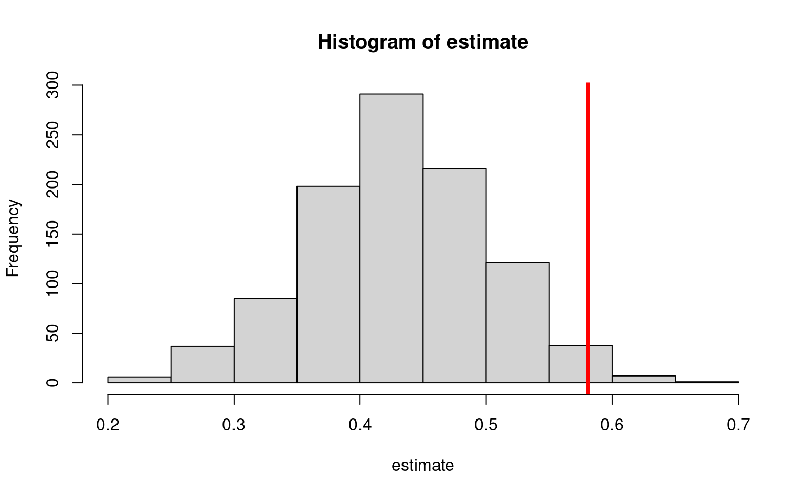
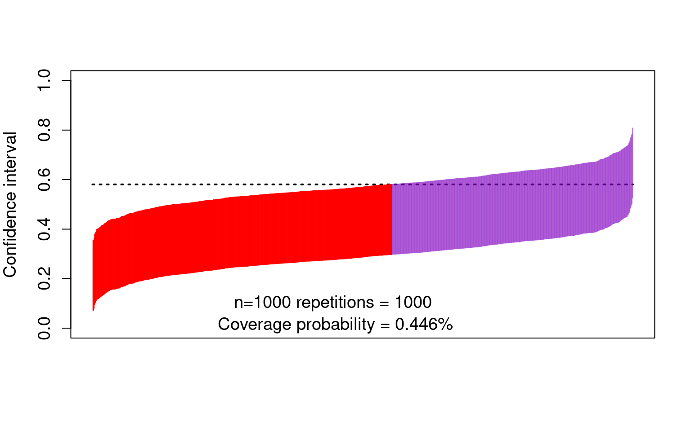
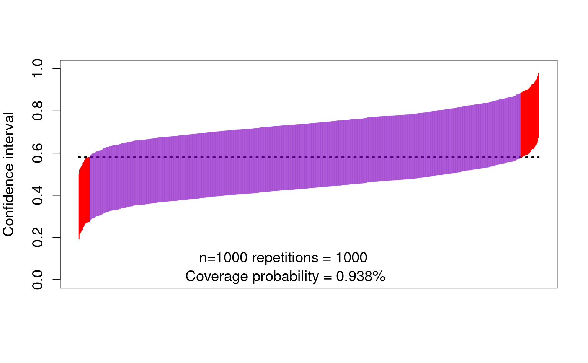

- The project is out-of-sync -- use `renv::status()` for details.5 Construction of G-computation and weighted estimators for the NDE: The case of the natural direct effect
5.1 Recap of definition and identification of the natural direct effect
Recall:
Code
\dimendef\prevdepth=0
\pgfdeclarelayer{background}
\pgfsetlayers{background,main}
\usetikzlibrary{arrows,positioning}
\tikzset{
>=stealth',
punkt/.style={
rectangle,
rounded corners,
draw=black, very thick,
text width=6.5em,
minimum height=2em,
text centered},
pil/.style={
->,
thick,
shorten <=2pt,
shorten >=2pt,}
}
\newcommand{\Vertex}[2]
{\node[minimum width=0.6cm,inner sep=0.05cm] (#2) at (#1) {$#2$};
}
\newcommand{\VertexR}[2]
{\node[rectangle, draw, minimum width=0.6cm,inner sep=0.05cm] (#2) at (#1) {$#2$};
}
\newcommand{\ArrowR}[3]
{ \begin{pgfonlayer}{background}
\draw[->,#3] (#1) to[bend right=30] (#2);
\end{pgfonlayer}
}
\newcommand{\ArrowL}[3]
{ \begin{pgfonlayer}{background}
\draw[->,#3] (#1) to[bend left=45] (#2);
\end{pgfonlayer}
}
\newcommand{\EdgeL}[3]
{ \begin{pgfonlayer}{background}
\draw[dashed,#3] (#1) to[bend right=-45] (#2);
\end{pgfonlayer}
}
\newcommand{\Arrow}[3]
{ \begin{pgfonlayer}{background}
\draw[->,#3] (#1) -- +(#2);
\end{pgfonlayer}
}
\begin{tikzpicture}
\Vertex{-4, 0}{W}
\Vertex{0, 0}{M}
\Vertex{-2, 0}{A}
\Vertex{2, 0}{Y}
\Arrow{W}{A}{black}
\Arrow{A}{M}{black}
\Arrow{M}{Y}{black}
\ArrowL{W}{Y}{black}
\ArrowL{A}{Y}{black}
\ArrowL{W}{M}{black}
\end{tikzpicture}
- Assuming a binary \(A\), we define the natural direct effect as: \(\text{NDE} = \E(Y_{1,M_{0}} - Y_{0,M_{0}})\).
- and the natural indirect effect as: \(\text{NIE} = \E(Y_{1,M_{1}} - Y_{1,M_{0}})\).
- The observed data is \(O = (W, A, M, Y)\)
This SCM is represented in the above DAG and the following causal models: \[\begin{align*} W & = f_W(U_W) \\ A & = f_A(W, U_A) \\ M & = f_M(W, A, U_M) \\ Y & = f_Y(W, A, M, U_Y), \end{align*}\] where \((U_W, U_A,U_M, U_Y)\) are exogenous random errors.
Recall that we need to assume the following to identify the above causal effects from our observed data:
- \(A \indep Y_{a,m} \mid W\)
- \(M \indep Y_{a,m} \mid W, A\)
- \(A \indep M_a \mid W\)
- \(M_0 \indep Y_{1,m} \mid W\)
- and positivity assumptions
Then, the NDE is identified as \[ \psi(\P) = \E[\E\{\E(Y \mid A=1, M, W) - \E(Y \mid A=0, M, W) \mid A=0,W\}] \]
5.2 From causal to statistical quantities
- We have arrived at identification formulas that express quantities that we care about in terms of observable quantities
- That is, these formulas express what would have happened in hypothetical worlds in terms of quantities observable in this world.
- This required causal assumptions
- Many of these assumptions are empirically unverifiable
- We saw an example where we could relax the cross-world assumption, at the cost of changing the parameter interpretation (when we introduced randomized interventional direct and indirect effects).
- We also include an extra section at the end about stochastic randomized interventional direct and indirect effects, which allow us to relax the positivity assumption, also at the cost of changing the parameter interpretation.
- We are now ready to tackle the estimation problem, i.e., how do we best learn the value of quantities that are observable?
- The resulting estimation problem can be tackled using statistical assumptions of various degrees of strength
- Most of these assumptions are verifiable (e.g., a linear model)
- Thus, most are unnecessary (except for convenience)
- We have worked hard to try to satisfy the required causal assumptions
- This is not the time to introduce unnecessary statistical assumptions
- The estimation approach we will minimizes reliance on these statistical assumptions.
5.3 Computing identification formulas if you know the true distribution
- The mediation parameters that we consider can be seen as a function of the joint probability distribution of observed data \(O=(W,A,Z,M,Y)\)
- For example, under identifiability assumptions the natural direct effect is equal to \[ \psi(\P) = \E[\color{Goldenrod}{\E\{\color{ForestGreen} {\E(Y \mid A=1, M, W) - \E(Y \mid A=0, M, W)} \mid A=0, W \}}] \]
- The notation \(\psi(\P)\) means that the parameter is a function of \(\P\) – in other words, that it is a function of this joint probability distribution
- This means that we can compute it for any distribution \(\P\)
- For example, if we know the true \(\P(W,A,M,Y)\), we can comnpute the true value of the parameter by:
- Computing the conditional expectation \(\E(Y\mid A=1,M=m,W=w)\) for all values \((m,w)\)
- Computing the conditional expectation \(\E(Y\mid A=0,M=m,W=w)\) for all values \((m,w)\)
- Computing the probability \(\P(M=m\mid A=0,W=w)\) for all values \((m,w)\)
- Compute \[\begin{align*} \color{Goldenrod}{\E\{}&\color{ForestGreen}{\E(Y \mid A=1, M, W) - \E(Y \mid A=0, M, W)}\color{Goldenrod}{\mid A=0,W\}} =\\ &\color{Goldenrod}{\sum_m\color{ForestGreen}{\{\E(Y \mid A=1, m, w) - \E(Y \mid A=0, m, w)\}} \P(M=m\mid A=0, W=w)} \end{align*}\]
- Computing the probability \(\P(W=w)\) for all values \(w\)
- Computing the mean over all values \(w\)
5.4 Plug-in (a.k.a g-computation) estimator
The above is how you would compute the true value if you know the true distribution \(\P\)
- This is exactly what we did in our R examples before
- But we can use the same logic for estimation:
- Fit a regression to estimate, say \(\hat\E(Y\mid A=1,M=m,W=w)\)
- Fit a regression to estimate, say \(\hat\E(Y\mid A=0,M=m,W=w)\)
- Fit a regression to estimate, say \(\hat\P(M=m\mid A=0,W=w)\)
- Estimate \(\P(W=w)\) with the empirical distribution
- Evaluate \[ \psi(\hat\P) = \hat{\E}[\color{RoyalBlue}{ \hat{\E}\{\color{Goldenrod}{\hat\E(Y \mid A=1, M, W) - \hat{\E}(Y \mid A=0, M, W)}\mid A=0,W\}}] \]
- This is known as the G-computation estimator.
5.5 First weighted estimator (akin to inverse probability weighted)
- An alternative expression of the parameter functional (for the NDE) is given by \[ \E \bigg[\color{RoyalBlue}{\bigg\{ \frac{\I(A=1)}{\P(A=1\mid W)} \frac{\P(M\mid A=0,W)}{\P(M\mid A=1,W)} - \frac{\I(A=0)}{\P(A=0\mid W)}\bigg\}} \times \color{Goldenrod}{Y}\bigg] \]
- Thus, you can also construct a weighted estimator as \[ \frac{1}{n} \sum_{i=1}^n \bigg[\color{RoyalBlue}{\bigg\{ \frac{\I(A_i=1)}{\hat{\P}(A_i=1\mid W_i)} \frac{\hat{\P}(M_i\mid A_i=0,W_i)}{\hat{\P}(M_i\mid A_i=1, W_i)} - \frac{\I(A_i=0)}{\hat{\P}(A_i=0\mid W_i)}\bigg\}} \times \color{Goldenrod}{Y_i} \bigg] \]
5.6 Second weighted estimator
The parameter functional for the NDE can also be expressed as a combination of regression and weighting: \[ \E\bigg[\color{RoyalBlue}{\frac{\I(A=0)}{\P(A=0\mid W)}} \times \color{Goldenrod}{\E(Y \mid A=1, M, W) - \E(Y \mid A=0, M, W)}\bigg] \]
Thus, you can also construct a weighted estimator as \[ \frac{1}{n} \sum_{i=1}^n \bigg[\color{RoyalBlue}{ \frac{\I(A_i=0)}{\hat{\P}(A_i=0\mid W_i)}} \times \color{Goldenrod}{\hat{\E}(Y \mid A=1, M_i, W_i) - \hat{\E}(Y \mid A=0, M_i, W_i)}\bigg] \]
5.7 How can g-estimation and weighted estimation be implemented in practice?
- There are two possible ways to do G-computation or weighted estimation:
- Using parametric models for the above regressions
- Using flexible data-adaptive regression (aka machine learning)
5.8 Pros and cons of G-computation and weighting parametric models
- Pros:
- Easy to understand
- Ease of implementation (standard regression software)
- Can use the Delta method or the bootstrap for computation of standard errors
- Cons:
- Unless \(W\) and \(M\) contain very few categorical variables, it is very easy to misspecify the models
- This can introduce sizable bias in the estimators
- This modelling assumptions have become less necessary in the presence of data-adaptive regression tools (a.k.a., machine learning)
5.9 An example of the bias of a g-computation estimator of the natural direct effect
-
The following
Rchunk provides simulation code to exemplify the bias of a G-computation parametric estimator in a simple situation This yields a true NDE value of 0.5805
-
Let’s perform a simulation where we draw 1000 datasets from the above distribution, and compute a g-computation estimator based on
Code
gcomp <- function(y, m, a, w) { lm_y <- lm(y ~ m + a + w) pred_y1 <- predict(lm_y, newdata = data.frame(a = 1, m = m, w = w)) pred_y0 <- predict(lm_y, newdata = data.frame(a = 0, m = m, w = w)) pseudo <- pred_y1 - pred_y0 lm_pseudo <- lm(pseudo ~ a + w) pred_pseudo <- predict(lm_pseudo, newdata = data.frame(a = 0, w = w)) estimate <- mean(pred_pseudo) return(estimate) }Code
estimate <- lapply(seq_len(1000), function(iter) { n <- 1000 w <- runif(n, -1, 1) a <- rbinom(n, 1, pscore(w)) m <- rbinom(n, 1, mean_m(a, w)) y <- rnorm(n, mean_y(m, a, w)) est <- gcomp(y, m, a, w) return(est) }) estimate <- do.call(c, estimate) hist(estimate) abline(v = trueval, col = "red", lwd = 4)
-
The bias also affects the confidence intervals:
Code
cis <- cbind( estimate - qnorm(0.975) * sd(estimate), estimate + qnorm(0.975) * sd(estimate) ) ord <- order(rowSums(cis)) lower <- cis[ord, 1] upper <- cis[ord, 2] curve(trueval + 0 * x, ylim = c(0, 1), xlim = c(0, 1001), lwd = 2, lty = 3, xaxt = "n", xlab = "", ylab = "Confidence interval", cex.axis = 1.2, cex.lab = 1.2 ) for (i in 1:1000) { clr <- rgb(0.5, 0, 0.75, 0.5) if (upper[i] < trueval || lower[i] > trueval) clr <- rgb(1, 0, 0, 1) points(rep(i, 2), c(lower[i], upper[i]), type = "l", lty = 1, col = clr) } text(450, 0.10, "n=1000 repetitions = 1000 ", cex = 1.2) text(450, 0.01, paste0( "Coverage probability = ", mean(lower < trueval & trueval < upper), "%" ), cex = 1.2)
5.10 Pros and cons of G-computation or weighting with data-adaptive regression
- Pros:
- Easy to understand.
- Alleviate model-misspecification bias.
- Cons:
- Might be harder to implement depending on the regression procedures used.
- No general approaches for computation of standard errors and confidence intervals.
- For example, the bootstrap is not guaranteed to work, and it is known to fail in some cases.
5.11 Solution to these problems: robust semiparametric efficient estimation
- Intuitively, it combines the three above estimators to obtain an estimator with improved robustness properties
- It offers a way to use data-adaptive regression to
- avoid model misspecification bias,
- endow the estimators with additional robustness (e.g., multiple robustness), while
- allowing the computation of correct standard errors and confidence intervals using Gaussian approximations
6 Construction of a semiparametric efficient estimator for the NDE (a.k.a. the one-step estimator)
- Here we show the detail of how to construct an estimator for the NDE for illustration, but the construction of this estimator is a bit involved and may be complex in daily research practice
- For practice, we will teach you how to use our packages medoutcon (and medshift, as detailed in the extra material) for automatic implementation of these estimators of the NDE and other parameters
First, we need to introduce some notation to describe the EIF for the NDE
- Let \(Q(M, W)\) denote \(\E(Y\mid A=1, M, W) - \E(Y\mid A=0, M, W)\)
- We can now introduce the semiparametric efficient estimator:
\[\begin{align*} \hat{\psi} &= \frac{1}{n} \sum_{i=1}^n \color{RoyalBlue}{\bigg\{ \frac{\I(A_i=1)}{\hat{\P}(A_i=1 \mid W_i)} \frac{\hat{\P}(M_i \mid A_i=0,W)_i}{\hat{\P}(M_i \mid A_i=1,W_i)} - \frac{\I(A=0)}{\hat{\P}(A_i=0 \mid W_i)}\bigg\}} \color{Goldenrod}{[Y_i - \hat{\E}(Y\mid A_i,M_i,W_i)]} \\ &+ \frac{1}{n} \sum_{i=1}^n \color{RoyalBlue}{\frac{\I(A=0)}{\P(A=0 \mid W)}} \color{Goldenrod}{\big\{ \hat{Q}(M_i,W_i) - \hat{\E}[\hat{Q}(M_i,W_i) \mid W_i, A_i = 0] \big\}} \\ &+ \frac{1}{n} \sum_{i=1}^n \color{Goldenrod}{ \hat{\E}[\hat{Q}(M_i,W_i) \mid W_i,A_i=0]} \end{align*}\]
- In this estimator, you can recognize elements from the G-computation estimator and the weighted estimators:
- The third line is the G-computation estimator
- The second line is a centered version of the second weighted estimator
- The first line is a centered version of the first weighted estimator
- Estimating \(\P(M\mid A, W)\) is a very challenging problem when \(M\) is high-dimensional. But, since we have the ratio of these conditional densities, we can re-paramterize using Bayes’ rule to get something that is easier to compute: \[\begin{equation*} \frac{\P(M \mid A=0, W)}{\P(M \mid A=1,W)} = \frac{\P(A = 0 \mid M, W) \P(A=1 \mid W)}{\P(A = 1 \mid M, W) \P(A=0 \mid W)} \ . \end{equation*}\]
Thus we can change the expression of the estimator a bit as follows. First, some more notation that will be useful later:
- Let \(g(a\mid w)\) denote \(\P(A=a\mid W=w)\)
- Let \(e(a\mid m, w)\) denote \(\P(A=a\mid M=m, W=w)\)
- Let \(b(a, m, w)\) denote \(\E(Y\mid A=a, M=m, W=w)\)
- The quantity being averaged can be re-expressed as follows
\[\begin{align*} & \color{RoyalBlue}{\bigg\{ \frac{\I(A=1)}{g(0\mid W)} \frac{e(0\mid M,W)}{e(1\mid M,W)} - \frac{\I(A=0)}{g(0\mid W)}\bigg\}} \times \color{Goldenrod}{[Y - b(A,M,W)]} \\ &+ \color{RoyalBlue}{\frac{\I(A=0)}{g(0\mid W)}} \color{Goldenrod}{\big\{Q(M,W) - \E[Q(M,W) \mid W, A=0] \big\}} \\ &+ \color{Goldenrod}{\E[Q(M,W) \mid W, A=0]} \end{align*}\]
6.1 How to compute the one-step estimator (akin to Augmented IPW)
First we will generate some data:
Code
mean_y <- function(m, a, w) abs(w) + a * m
mean_m <- function(a, w)plogis(w^2 - a)
pscore <- function(w) plogis(1 - abs(w))
w_big <- runif(1e6, -1, 1)
trueval <- mean((mean_y(1, 1, w_big) - mean_y(1, 0, w_big)) * mean_m(0, w_big)
+ (mean_y(0, 1, w_big) - mean_y(0, 0, w_big)) *
(1 - mean_m(0, w_big)))
n <- 1000
w <- runif(n, -1, 1)
a <- rbinom(n, 1, pscore(w))
m <- rbinom(n, 1, mean_m(a, w))
y <- rnorm(n, mean_y(m, a, w))Recall that the semiparametric efficient estimator can be computed in the following steps:
-
Fit models for \(g(a\mid w)\), \(e(a\mid m, w)\), and \(b(a, m, w)\)
- In this example we will use Generalized Additive Models for tractability
- In applied settings we recommend using an ensemble of data-adaptive regression algorithms, such as the Super Learner (van der Laan, Polley, and Hubbard 2007)
-
Compute predictions \(g(1\mid w)\), \(g(0\mid w)\), \(e(1\mid m, w)\), \(e(0\mid m, w)\),\(b(1, m, w)\), \(b(0, m, w)\), and \(b(a, m, w)\)
Code
## Compute P(A = 1 | W) g1_pred <- predict(g_fit, type = 'response') ## Compute P(A = 0 | W) g0_pred <- 1 - g1_pred ## Compute P(A = 1 | M, W) e1_pred <- predict(e_fit, type = 'response') ## Compute P(A = 0 | M, W) e0_pred <- 1 - e1_pred ## Compute E(Y | A = 1, M, W) b1_pred <- predict(b_fit, newdata = data.frame(a = 1, m, w)) ## Compute E(Y | A = 0, M, W) b0_pred <- predict(b_fit, newdata = data.frame(a = 0, m, w)) ## Compute E(Y | A, M, W) b_pred <- predict(b_fit) -
Compute \(Q(M, W)\), fit a model for \(\E[Q(M,W) \mid W,A]\), and predict at \(A=0\)
-
Estimate the weights
\[\begin{equation*} \color{RoyalBlue}{\bigg\{ \frac{\I(A=1)}{g(0\mid W)} \frac{e(0 \mid M,W)}{e(1 \mid M,W)} - \frac{\I(A=0)}{g(0\mid W)} \bigg\}} \end{equation*}\] using the above predictions:
-
Compute the uncentered EIF:
-
The one step estimator is the mean of the uncentered EIF
van der Laan, Mark J, Eric C Polley, and Alan E Hubbard. 2007. “Super Learner.” Statistical Applications in Genetics and Molecular Biology 6 (1).
6.2 Performance of the one-step estimator in a small simulation study
First, we create a wrapper around the estimator
Code
one_step <- function(y, m, a, w) {
b_fit <- gam(y ~ m:a + s(w, by = a))
e_fit <- gam(a ~ m + w + s(w, by = m), family = binomial)
g_fit <- gam(a ~ w, family = binomial)
g1_pred <- predict(g_fit, type = 'response')
g0_pred <- 1 - g1_pred
e1_pred <- predict(e_fit, type = 'response')
e0_pred <- 1 - e1_pred
b1_pred <- predict(
b_fit, newdata = data.frame(a = 1, m, w), type = 'response'
)
b0_pred <- predict(
b_fit, newdata = data.frame(a = 0, m, w), type = 'response'
)
b_pred <- predict(b_fit, type = 'response')
pseudo <- b1_pred - b0_pred
q_fit <- gam(pseudo ~ a + w + s(w, by = a))
q_pred <- predict(q_fit, newdata = data.frame(a = 0, w = w))
ip_weights <- a / g0_pred * e0_pred / e1_pred - (1 - a) / g0_pred
eif <- ip_weights * (y - b_pred) + (1 - a) / g0_pred *
(pseudo - q_pred) + q_pred
return(mean(eif))
}Let us first examine the bias
- The true value is:
Code
[1] 0.5805508- Bias simulation
Code
estimate <- lapply(seq_len(1000), function(iter) {
n <- 1000
w <- runif(n, -1, 1)
a <- rbinom(n, 1, pscore(w))
m <- rbinom(n, 1, mean_m(a, w))
y <- rnorm(n, mean_y(m, a, w))
estimate <- one_step(y, m, a, w)
return(estimate)
})
estimate <- do.call(c, estimate)
hist(estimate)
abline(v = trueval, col = "red", lwd = 4)- And now the confidence intervals:
Code
cis <- cbind(
estimate - qnorm(0.975) * sd(estimate),
estimate + qnorm(0.975) * sd(estimate)
)
ord <- order(rowSums(cis))
lower <- cis[ord, 1]
upper <- cis[ord, 2]
curve(trueval + 0 * x,
ylim = c(0, 1), xlim = c(0, 1001), lwd = 2, lty = 3, xaxt = "n",
xlab = "", ylab = "Confidence interval", cex.axis = 1.2, cex.lab = 1.2
)
for (i in 1:1000) {
clr <- rgb(0.5, 0, 0.75, 0.5)
if (upper[i] < trueval || lower[i] > trueval) clr <- rgb(1, 0, 0, 1)
points(rep(i, 2), c(lower[i], upper[i]), type = "l", lty = 1, col = clr)
}
text(450, 0.10, "n=1000 repetitions = 1000 ", cex = 1.2)
text(450, 0.01, paste0(
"Coverage probability = ",
mean(lower < trueval & trueval < upper), "%"
), cex = 1.2)
6.3 A note about targeted minimum loss-based estimation (TMLE)
- The above estimator is great because it allows us to use data-adaptive regression to avoid bias, while allowing the computation of correct standard errors
- This estimator has a problem, though:
- It can yield answers outside of the bounds of the parameter space
- E.g., if \(Y\) is binary, it could yield direct and indirect effects outside of \([-1,1]\)
- To solve this, you can compute a TMLE instead (implemented in the R packages, coming up)
6.4 A note about cross-fitting
- When using data-adaptive regression estimators, it is recommended to use cross-fitted estimators
- Cross-fitting is similar to cross-validation:
- Randomly split the sample into K (e.g., K=10) subsets of equal size
- For each of the 9/10ths of the sample, fit the regression models
- Use the out-of-sample fit to predict in the remaining 1/10th of the sample
- Cross-fitting further reduces the bias of the estimators
- Cross-fitting aids in guaranteeing the correctness of the standard errors and confidence intervals
- Cross-fitting is implemented by default in the R packages that you will see next